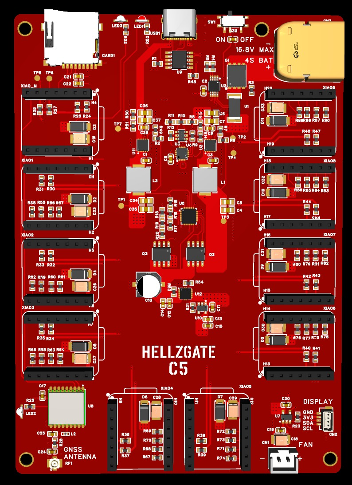

{kind=link}
Wireless observation
Passive Wi-Fi observation on 2.4 and 5 GHz, plus Bluetooth LE. One master coordinates nine removable scanner modules.
A standalone platform for observing the wireless world around you. Ten removable ESP32-C5 modules, with a design built around local logging and onboard positioning—no required cloud account or subscription.
In development. Design complete; physical FullGate testing is next.

FullGate brings multiple radios together for wireless research, education, and authorized testing. Its firmware foundation observes Wi-Fi and Bluetooth LE; complete standalone operation is still being verified.
Passive Wi-Fi observation on 2.4 and 5 GHz, plus Bluetooth LE. One master coordinates nine removable scanner modules.
Onboard GNSS positioning support and microSD logging are part of the design. Session, saved-file, and export testing remain ahead.
I²C is the primary communication backbone within FullGate. ESP-NOW provides a secondary wireless path, tested separately on a larger bench setup.
This is a separate one-master, 20-scanner setup—not FullGate's nine physical scanner slots. The rate is a measured bench average, not unique devices, a per-scanner rate, or a maximum-throughput rating.
The timed window recorded 13,782 frames, no new reported lost frames, overflow, dropouts, or restarts, one new duplicate indication, and zero bad-CRC, bad-field, or table-full errors.
These are timed-window deltas, not cumulative startup counters. All scanners had antennas, but antenna types and observation loads differed. This does not establish maximum RF capacity or complete field performance.
App work is paused until the standalone baseline is stable. FullGate is intended to remain useful without the app.
The first planned HellzGate product is a core board, not a complete ready-to-use kit. No orders or release date announced.
Production-board power behavior, subsystem operation, and battery runtime still need verification.
XIAO modules, antennas, display, fan, power supply, battery, and enclosure are not included with the planned Core Board.
No preorders or waitlists. Availability will be announced on GitHub and Discord after testing.
Follow the BuildMiniGate is a future compact platform, with specifications and timing to follow after FullGate validation.
Multigating would link independently powered FullGates wirelessly through their local masters to a central collector. It is exploratory, not an implemented feature.
HellzGate started with a question: what if a whole cluster of radios could work together and report to one place? A sketch became a breadboard, then custom engineering boards, and now the FullGate design.

These working engineering platforms helped prove the multi-node concept and expose the power, communication, integration, and mechanical work needed for FullGate.